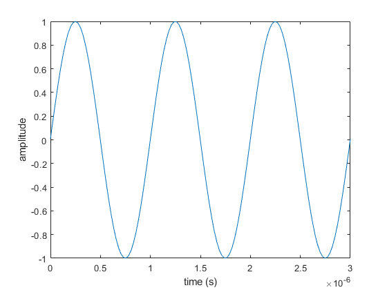
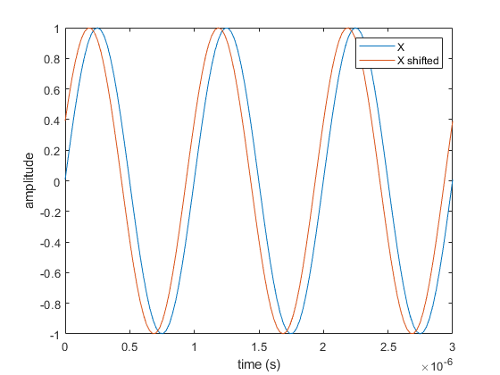
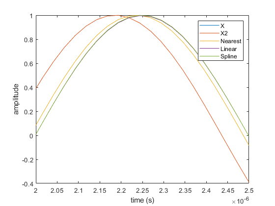
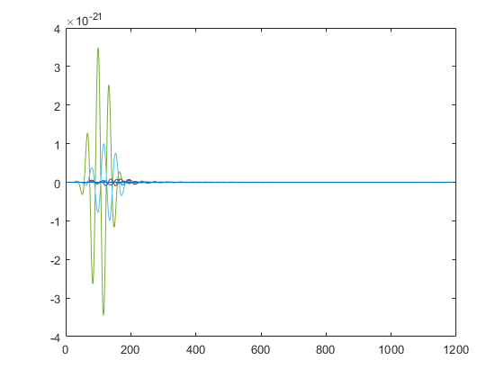
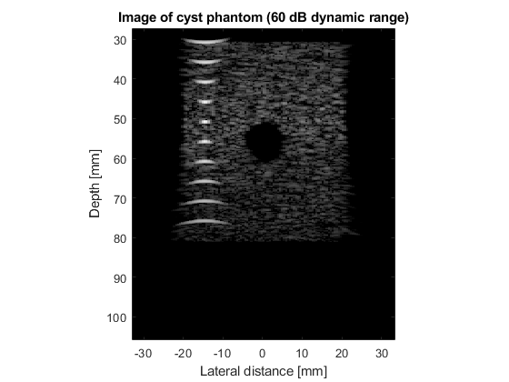

Contents
Part A
f0 = 1E6;
fs = 40E6;
c=1540;
ncyc = 3;
T = 1/f0;
npts = ncyc*T*fs;
t = linspace(0,T*3,npts);
x = 2E-6;
k = 2 * pi / (c/f0 );
X = 1*sin(2*pi*f0*t+ k*x);
close all
plot(t,X)
xlabel('time (s)')
ylabel('amplitude')

Part B
X = 1*sin(2*pi*f0*t+ k*x);
phase = pi/8;
X2 = 1*sin(2*pi*f0*t+ k*x + phase);
close all
plot(t,X,t,X2)
legend('X','X shifted')
xlabel('time (s)')
ylabel('amplitude')

Part C
shift = -(1/f0)/16;
Xnear = interp1(t,X2,t+shift,'nearest');
Xlin = interp1(t,X2,t+shift,'linear');
Xspline = interp1(t,X2,t+shift,'spline');
close all
plot(t,X,t,X2,t,Xnear,t,Xlin,t,Xspline)
legend('X','X2','Nearest','Linear','Spline')
xlim([2E-6 2.5E-6])
xlabel('time (s)')
ylabel('amplitude')

Part D
errN = nanmean((X-Xnear).^2)
errL = nanmean((X-Xlin).^2)
errS = nanmean((X-Xspline).^2)
p = 1/sqrt(2);
dBN = 10*log10(errN/p)
dBL = 10*log10(errL/p)
dBS = 10*log10(errS/p)
errN =
0.0028
errL =
4.9691e-06
errS =
4.1939e-08
dBN =
-23.9647
dBL =
-51.5321
dBS =
-72.2686
5a Ex:6.1(page 62 USERGUIDE)
f0=3e6;
fs=100e6;
c=1540;
lambda=c/f0;
element_height=5/1000;
kerf=0.1/1000;
focus=[0 0 70]/1000;
emit_aperture = xdc_linear_array (128, lambda/2, element_height, kerf, 1, 1,focus);
impulse_response=sin(2*pi*f0*(0:1/fs:2/f0));
impulse_response=impulse_response.*hanning(max(size(impulse_response)))';
xdc_impulse (emit_aperture, impulse_response);
excitation=sin(2*pi*f0*(0:1/fs:2/f0));
xdc_excitation (emit_aperture, excitation);
receive_aperture = xdc_linear_array (128, lambda/2, element_height, kerf, 1, 1,focus);
xdc_impulse (receive_aperture, impulse_response);
point_position=[0 0 70]/1000;
no_lines=50;
sector=20 * pi/180;
d_theta=sector/no_lines;
image_data=zeros(800,no_lines);
theta= -sector/2;
for i=1:no_lines
xdc_focus (emit_aperture, 0, [70*sin(theta) 0 70*cos(theta)]/1000);
xdc_focus (receive_aperture, 0, [70*sin(theta) 0 70*cos(theta)]/1000);
[v, t1]=calc_scat(emit_aperture, receive_aperture, point_position, 1);
image_data(1:max(size(v)),i)=v';
times(i) = t1;
theta = theta + d_theta;
end
plot(image_data)

5b Ex:6.2
f0=3e6;
fs=100e6;
c=1540;
lambda=c/f0;
width=lambda;
element_height=5/1000;
kerf=width/20;
focus=[0 0 50]/1000;
N_elements=192;
N_active=64;
set_sampling(fs);
emit_aperture = xdc_linear_array (N_elements, width, element_height, kerf, 1, 5, focus);
impulse_response=sin(2*pi*f0*(0:1/fs:2/f0));
impulse_response=impulse_response.*hanning(max(size(impulse_response)))';
xdc_impulse (emit_aperture, impulse_response);
excitation=sin(2*pi*f0*(0:1/fs:2/f0));
xdc_excitation (emit_aperture, excitation);
receive_aperture = xdc_linear_array (N_elements, width, element_height, kerf, 1, 5, focus);
xdc_impulse (receive_aperture, impulse_response);
[phantom_positions, phantom_amplitudes] = cyst_phantom(10000);
no_lines=N_elements-N_active+1;
dx=width;
z_focus=50/1000;
image_data=zeros(1,no_lines);
for i=1:no_lines
x=(i-1-no_lines/2)*dx;
xdc_center_focus (emit_aperture, [x 0 0]);
xdc_focus (emit_aperture, 0, [x 0 z_focus]);
xdc_center_focus (receive_aperture, [x 0 0]);
xdc_focus (receive_aperture, 0, [x 0 z_focus]);
apo=[zeros(1, i-1) hamming(N_active)' zeros(1, N_elements-N_active-i+1)];
xdc_apodization (emit_aperture, 0, apo);
xdc_apodization (receive_aperture, 0, apo);
[v, t1]=calc_scat(emit_aperture, receive_aperture, phantom_positions, phantom_amplitudes);
image_data(1:max(size(v)),i)=v;
times(i) = t1;
end
xdc_free (emit_aperture)
xdc_free (receive_aperture)
min_sample=min(times)*fs;
for i=1:no_lines
rf_env=abs(hilbert([zeros(round(times(i)*fs-min_sample),1); image_data(:,i)]));
env(1:size(rf_env,1),i)=rf_env;
end
env_dB=20*log10(env);
env_dB=env_dB-max(max(env_dB));
env_gray=127*(env_dB+60)/60;
depth=((0:size(env,1)-1)+min_sample)/fs*c/2;
x=((1:no_lines)-no_lines/2)*dx;
image(x*1000, depth*1000, env_gray)
xlabel('Lateral distance [mm]')
ylabel('Depth [mm]')
axis('image')
colormap(gray(128))
title('Image of cyst phantom (60 dB dynamic range)')
